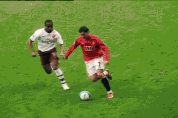

Ronaldo e' un calciatore professionista portoghese, ampiamente riconosciuto come uno dei piu' grandi e determinanti giocatori nella storia del calcio mondiale.
Alimentazione: Effettua fino a sei pasti proteici al giorno, focalizzati su pollo, pesce, uova e verdure, escludendo totalmente zuccheri e bevande gassate.
Sonno a cicli: Sotto la guida di esperti del sonno, Ronaldo non dorme per 8 ore consecutive ma adotta il sonno polifasico: 5 o 6 pisolini da 90 minuti distribuiti nell'arco delle 24 ore.
Famiglia: Ha una famiglia numerosa composta da cinque figli ed e' sposato con la modella e influencer Georgina Rodriguez.

Back to Home Page